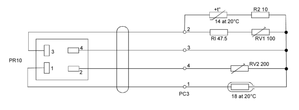
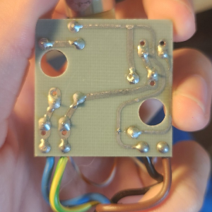
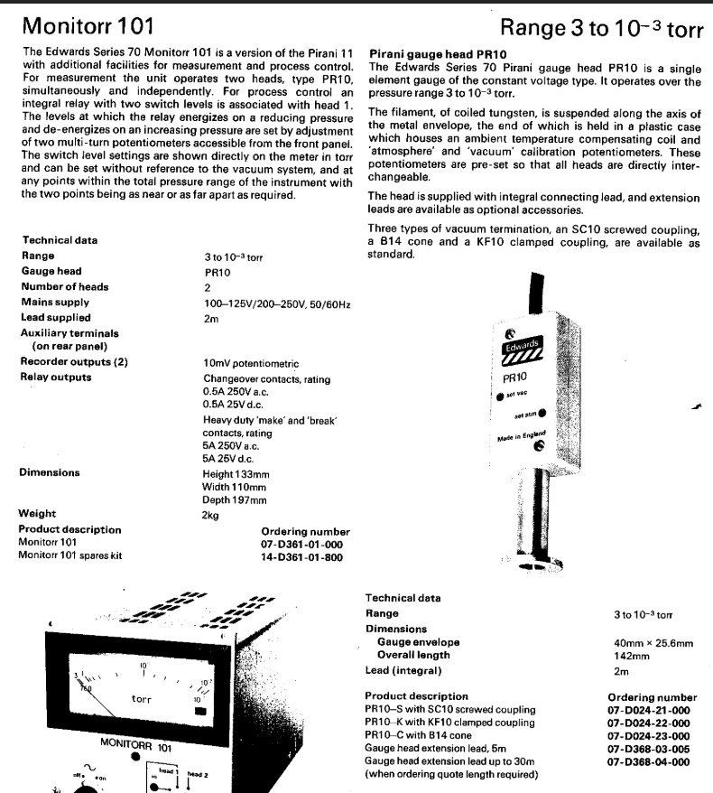
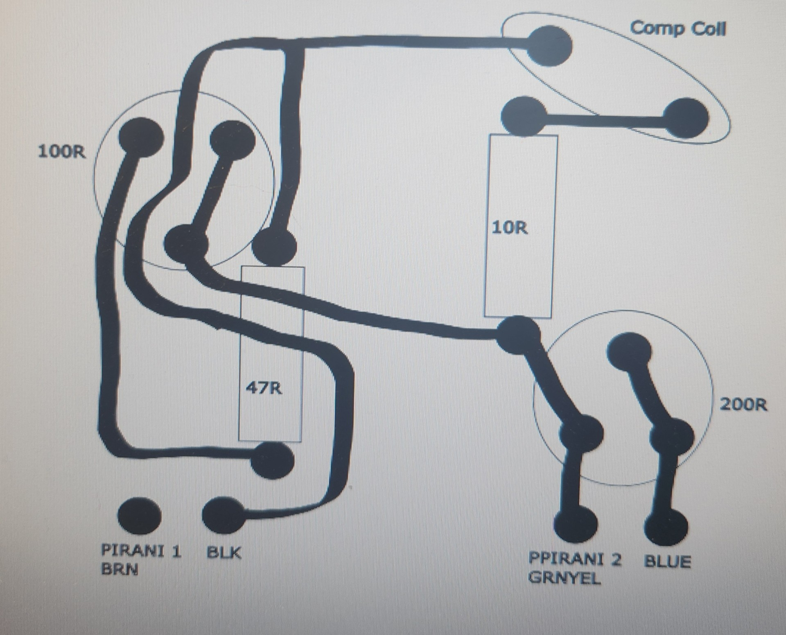
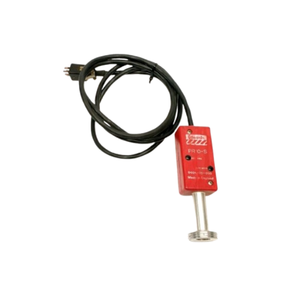

Edwards PR10S Restoration
Status: Complete (for now)
6/26/2025
A few months back, continuing some high vacuum experiments, I needed a way to quantitate just how much vacuum I was pulling. Looking online, I found various different gauges from different manufacturers, at various different price points. I settled on an Airserco model 9044 gauge with a 9022 transducer. Months of "using" it (trying to get a reading) later, and I finally gave up and bought a different gauge on Ebay. Little did I know, I would be opening yet another can of worms.
Only after I had bought it (seller gave me a considerable discount and I jumped, arguably too early), I started looking into documentation and schematics. Much to my amazement, I found (what I thought) was the correct schematic:

Having had a confident look at the schematic and identifying it as a wheatstone bridge with two adjustments, one for compensation, and one for heater current(?), I connected what I thought was power and ground, gave it 12v, and promptly unplugged it after I heard a bang. Opening it up for further investigation, and I found a melted resistor. I replaced said resistor (it was the 47.5R), and actually thought before proceeding. Luckily I didnt melt the compensator coil...

Checking the board itself, I noticed some features such as the rounded traces that made me think it was older than I had originally made it out to be. After sending an email to Edwards, this suspicion was confirmed. In fact, Edwards support found it in the 1976 catalog of gauges.

Regardless of its age, the transducer tube was in decent shape (intact filament), so I persisted. My next best bet was to reverse engineer the board, and so I did, tracing it in inkscape.

Taking from this, I traced back every connection and created a schematic with the pin diagrams to the connector and the corresponding wire colors on paper. Looking at this configuration, I was able to take a reasonable guess as to where to apply power to: a.) not burn the filament out b.) not destroy resistors, and c.) power the entire bridge and not just one leg. Attaching a current regulated supply this time, with 5v for testing, only the transducer tube heats up, and as expected at atmospheric, I measured close to 0v across the other two legs of the bridge, which is correct (bridge is balanced at atmospheric). Success! Right..? Not yet.
When I was purchasing the tube, in my sheer excitement to finally find what I wanted for a reasonable price, I neglected to look at what the gauge's fitting was. When I recieved it, I noticed it resembled a KF16 vacuum fitting in diameter and angle, but the flange was significantly thicker to accomodate for threading, something I hadnt seen before on a fitting of this type. Talking to Edwards support, we were able to figure out that this was an SC-10 screwed coupling (also shown in the catalog from '76).

Unfortunately, this SC-10 fitting doesnt seem to exist on online marketplaces.
Now I need to make an adapter... the list of things to do grows ever longer.